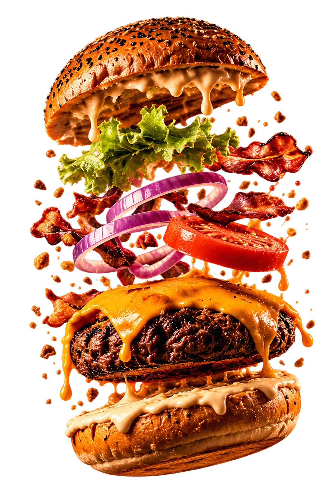
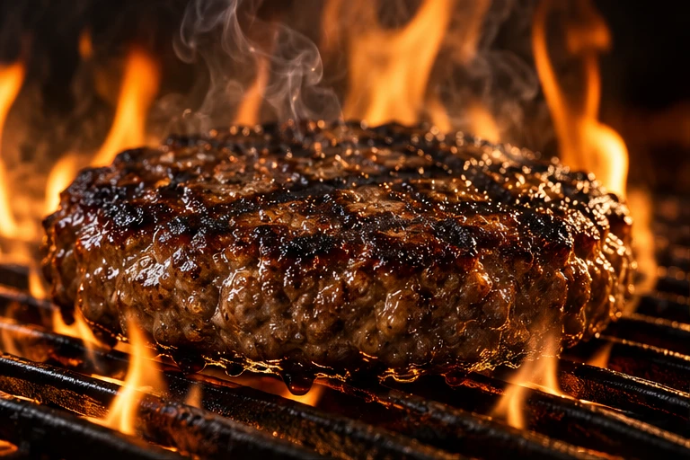
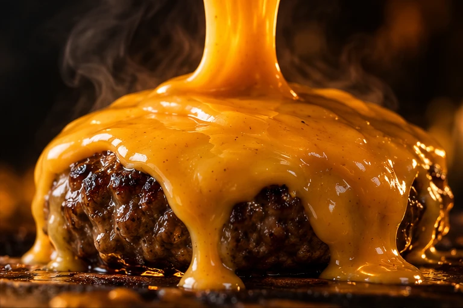
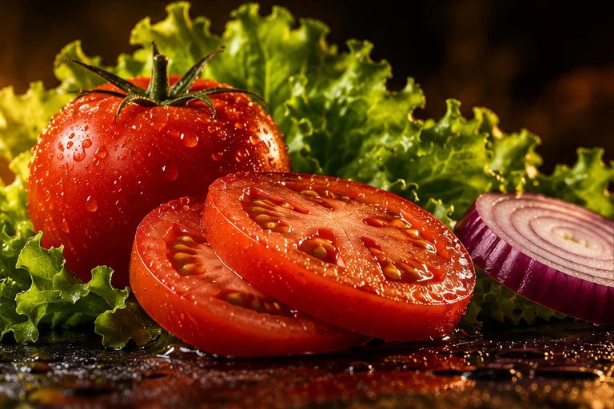
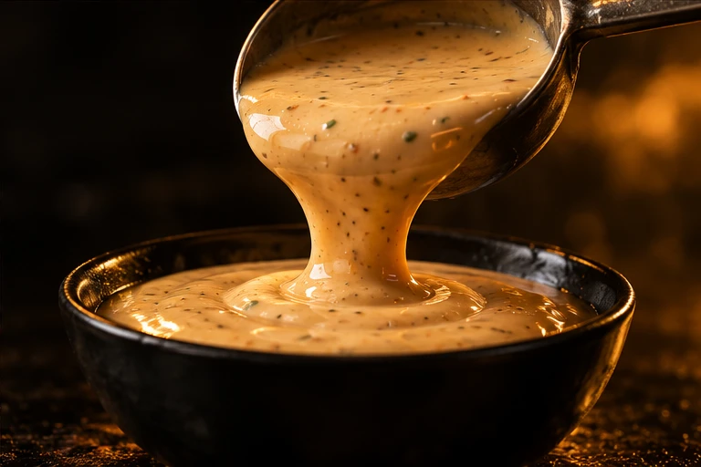
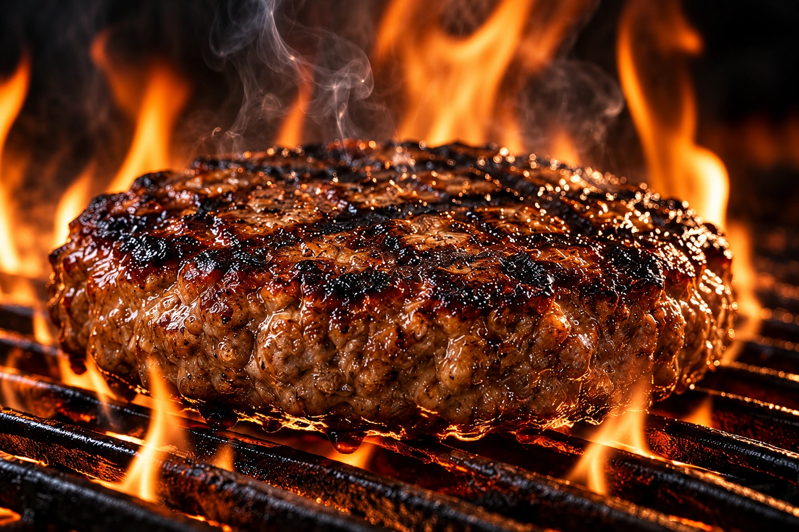
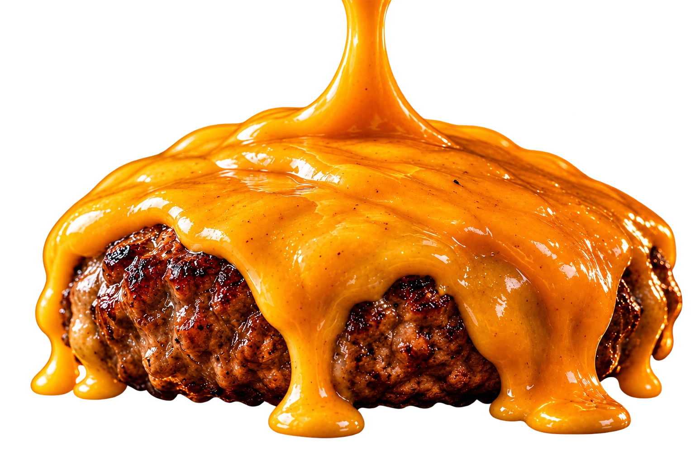

HAMBÚRGUERES ARTESANAIS
SABOREM OUTRONÍVEL.
Ingredientes selecionados, combinações irresistíveis e uma experiência que vai muito além da primeira mordida.

É MAIS
QUE COMIDA.
É EXPERIÊNCIA.
DE VERDADE
E DESCUBRA
CADA CAMADA

A BASE
DE TUDO.
Carne selecionada e preparada no ponto certo para um sabor incomparável.

QUEIJO
QUE DERRETE.
Uma camada generosa de sabor em cada mordida.

INGREDIENTES
FRESCOS.
Do campo para o seu burger, sempre no ponto ideal.

O TOQUE
FINAL.
Molhos exclusivos que elevam a experiência.
POR DENTRO DO EXTRAORDINÁRIO
FLAME / 09 INGREDIENTESCADA CAMADA
TEM UMA
HISTÓRIA.
Da brasa ao pão artesanal.
Role e descubra cada detalhe.
PÃO ARTESANAL
Dourado por fora. Macio por dentro.

O FOGO TRANSFORMA.O CUIDADO FAZ A DIFERENÇA.
NOSSA ESSÊNCIA
NÃO É SÓ
UM BURGER.
É UMA
EXPERIÊNCIA.
Na Flame Burger, cada combinação é pensada para entregar intensidade, textura e sabor. Do primeiro ingrediente à última mordida, tudo faz parte da experiência.
Fogo. Sabor. Alma.

o ponto é esse. CHEGA MAIS PERTO.DÁ PRA SENTIR DAQUI.
O SABOR TEM UM RITUAL
BRASA.
DERRETE.
MARCA.
O que fica na memória
começa muito antes da mordida.
- 01
O fogo dá o tom.
Crosta na medida. Suculência por dentro. É na brasa que tudo começa.
- 02
O cheddar toma conta.
Derrete devagar, abraça a carne e conecta cada camada.
- 03
O pão fecha a história.
Dourado, macio e pronto para segurar uma combinação de respeito.
SUA PRÓXIMA MORDIDA COMEÇA AQUI
A FOME
BATEU?
Tem vontade que só a brasa resolve.
Seu próximo favorito começa aqui.
SEM LIMITES NO SABOR. ↗